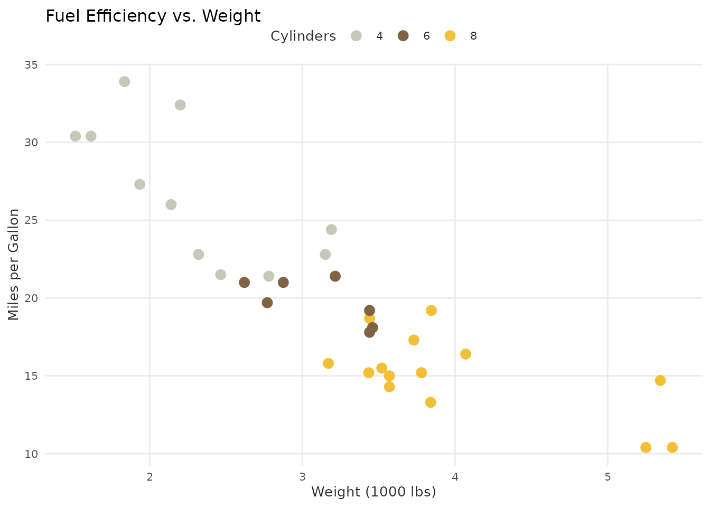
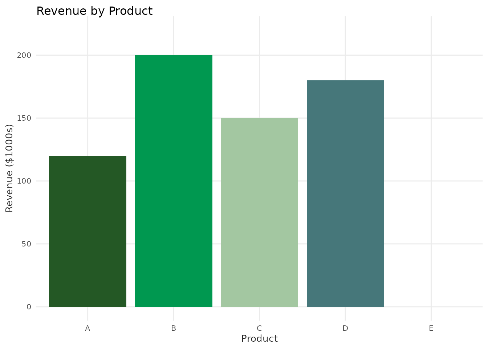
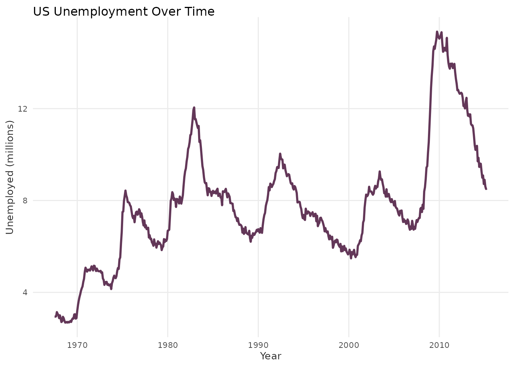
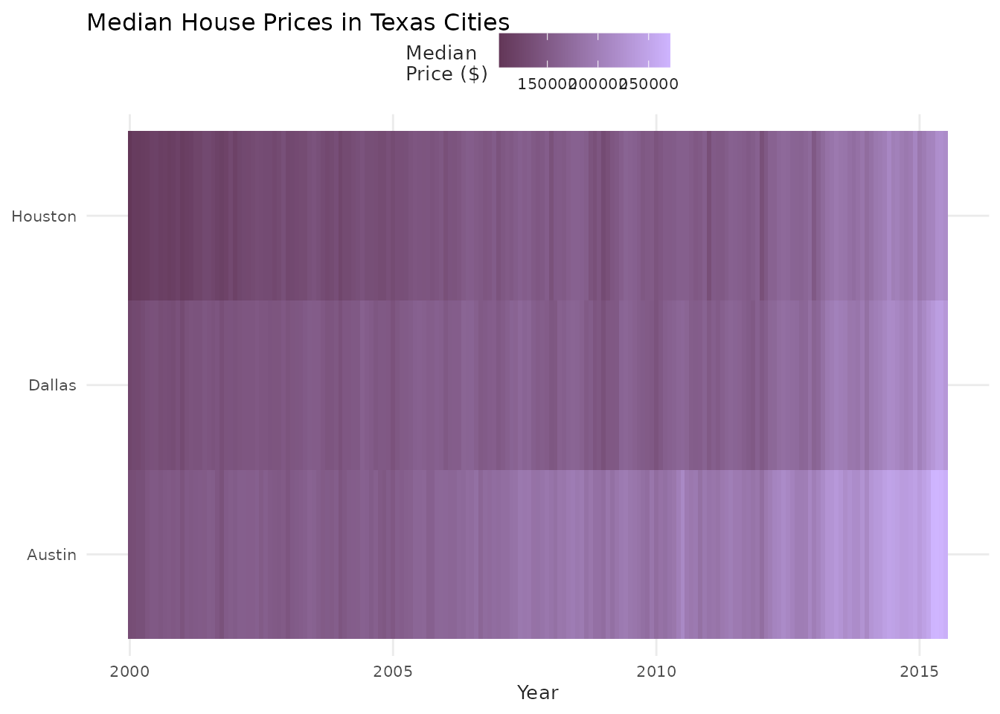
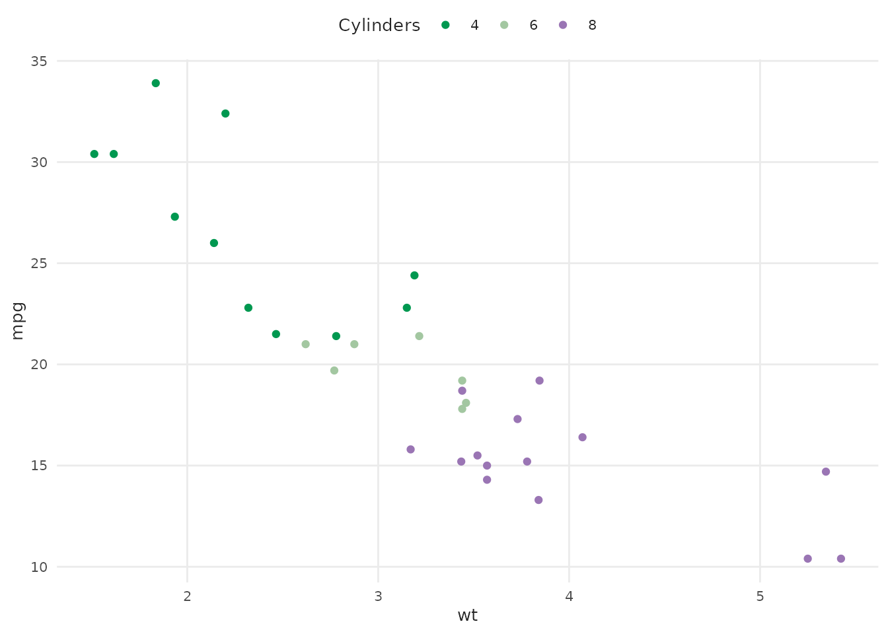
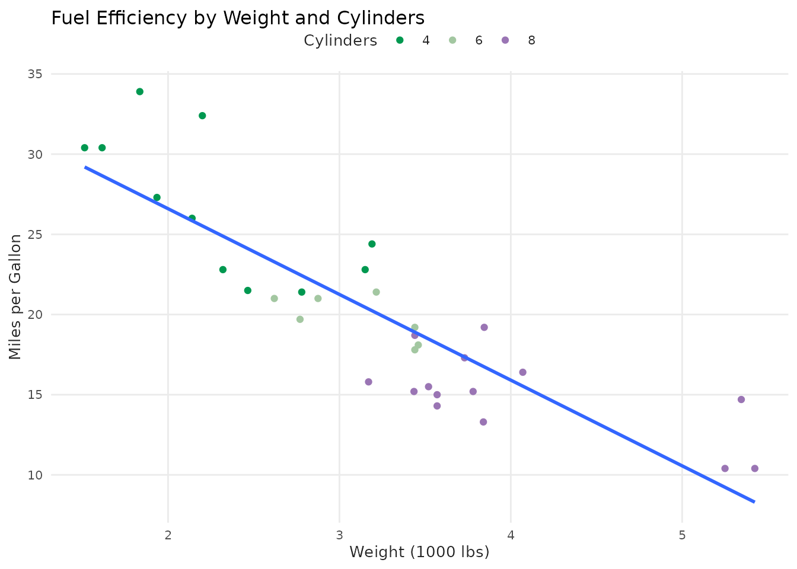
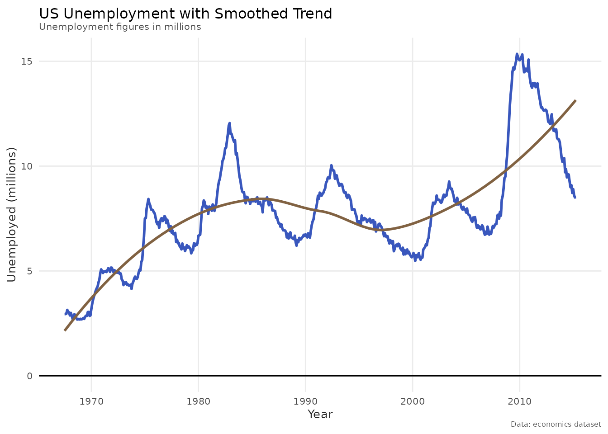
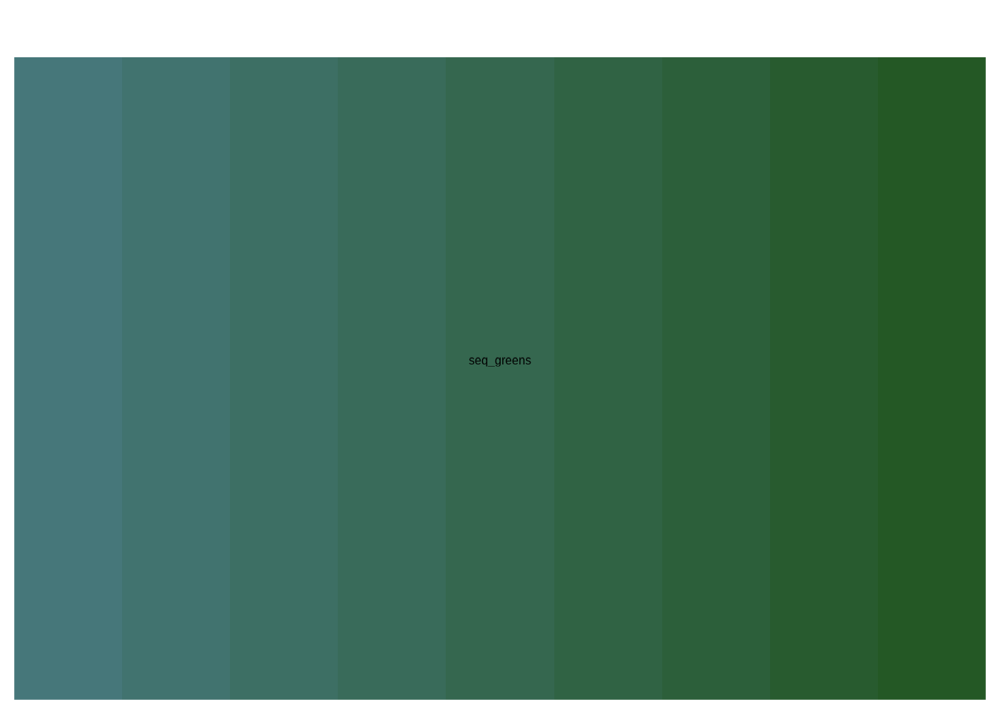
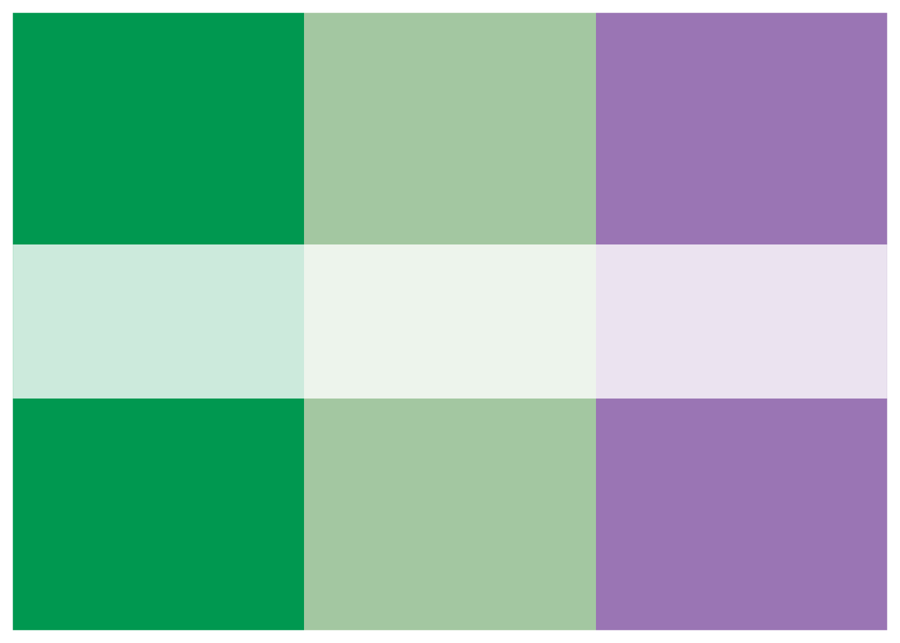
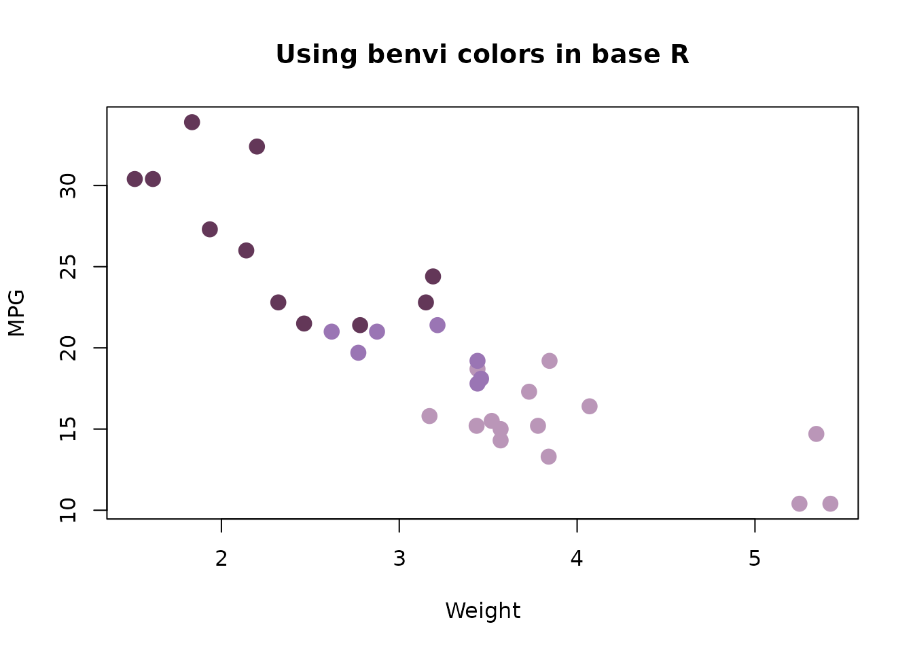

Introduction
Welcome to benviplot! This package provides a
comprehensive set of tools for creating beautiful, publication-ready
visualizations in R using ggplot2.
What is benviplot?
benviplot offers:
- Curated Color Palettes: Professional color schemes optimized for data visualization
- ggplot2 Integration: Seamless scales for both discrete and continuous data
- Plot Helpers: Convenience functions for common chart types
- Custom Theme: Clean, modern theme with professional typography
Disclaimer
IMPORTANT: This is an unofficial, independent project created by Vinicius Oike and is NOT affiliated with, endorsed by, or connected to QuintoAndar in any way. Benvi was a former brand of QuintoAndar that was discontinued in 2024. This package uses publicly available color schemes from that period for data visualization purposes.
Installation
Install benviplot from GitHub:
# Install remotes if needed
if (!requireNamespace("remotes", quietly = TRUE)) {
install.packages("remotes")
}
# Install benviplot
remotes::install_github("viniciusoike/benviplot")Font Setup (Optional but Recommended)
benviplot uses the Poppins font family
from Google Fonts for professional typography. Installing Poppins is
optional - the theme will automatically fall back to
your system’s default font if Poppins isn’t available.
One-Command Setup
The easiest way to set up fonts:
library(benviplot)
# One-time setup - installs Poppins and configures graphics
setup_benvi_fonts()This command will: 1. Download and install Poppins to your system 2. Check for the ragg package (recommended for best quality) 3. Provide guidance for RStudio configuration
You only need to do this once per computer!
What if I skip font setup?
No problem! The package will work perfectly fine without Poppins. You’ll see a one-time message suggesting installation, but all functionality will work with your system’s default font.
Detailed Font Setup
For detailed installation instructions, troubleshooting, and information about the new font system, see:
vignette("font-setup")Quick Start
Let’s create your first plot with benviplot!
library(ggplot2)
library(benviplot)
# Use built-in mtcars dataset
head(mtcars)
#> mpg cyl disp hp drat wt qsec vs am gear carb
#> Mazda RX4 21.0 6 160 110 3.90 2.620 16.46 0 1 4 4
#> Mazda RX4 Wag 21.0 6 160 110 3.90 2.875 17.02 0 1 4 4
#> Datsun 710 22.8 4 108 93 3.85 2.320 18.61 1 1 4 1
#> Hornet 4 Drive 21.4 6 258 110 3.08 3.215 19.44 1 0 3 1
#> Hornet Sportabout 18.7 8 360 175 3.15 3.440 17.02 0 0 3 2
#> Valiant 18.1 6 225 105 2.76 3.460 20.22 1 0 3 1A Simple Scatter Plot
ggplot(mtcars, aes(x = wt, y = mpg, color = as.factor(cyl))) +
geom_point(size = 3) +
scale_color_benvi_d(pal_name = "qual_2", name = "Cylinders") +
labs(
title = "Fuel Efficiency vs. Weight",
x = "Weight (1000 lbs)",
y = "Miles per Gallon"
) +
theme_benvi()
That’s it! Just three key components:
-
scale_color_benvi_d(): Applies benvi discrete color palette -
theme_benvi(): Applies benvi visual theme -
palette = "qual_2": Selects specific color palette
Viewing Color Palettes
Before using a palette, you can preview it:
# View a qualitative palette
benvi_palette("qual_2")
# View a sequential palette
benvi_palette("seq_greens")
# View a set palette
benvi_palette("purples")
Getting Hex Color Values
Extract hex codes for use outside ggplot2:
# Get hex codes as character vector
colors <- as.character(benvi_palette("qual_2"))
colors
#> [1] "#C5C9BA" "#816242" "#F2C037" "#009850" "#466795" "#9A75B4" "#EA4E58"
#> [8] "#C64729"
# Use specific colors
my_blue <- benvi_palette("qual_2")[1]
my_blue
#> [1] "#C5C9BA"Basic Examples
Bar Chart with Discrete Colors
# Sample data
sales <- data.frame(
product = c("A", "B", "C", "D", "E"),
revenue = c(120, 200, 150, 180, 220)
)
ggplot(sales, aes(x = product, y = revenue, fill = product)) +
geom_col(show.legend = FALSE) +
scale_fill_benvi_d(pal_name = "greens") +
labs(
title = "Revenue by Product",
x = "Product",
y = "Revenue ($1000s)"
) +
theme_benvi()
Line Chart with Groups
# Use built-in economics dataset
ggplot(economics, aes(x = date, y = unemploy / 1000)) +
geom_line(color = benvi_palette("purples")[1], linewidth = 1) +
labs(
title = "US Unemployment Over Time",
x = "Year",
y = "Unemployed (millions)"
) +
theme_benvi()
Heatmap with Continuous Colors
# Sample data - Texas housing
housing <- subset(txhousing, city %in% c("Austin", "Houston", "Dallas"))
ggplot(housing, aes(x = date, y = city, fill = median)) +
geom_tile() +
scale_fill_benvi_c(pal_name = "seq_purples", name = "Median\nPrice ($)") +
labs(
title = "Median House Prices in Texas Cities",
x = "Year",
y = NULL
) +
theme_benvi()
Using Plot Helper Functions
benviplot includes convenience functions for common plot
types. These save typing during exploratory data analysis.
Scatter Plot with Grouping
plot_scatter(
mtcars,
x = wt,
y = mpg,
variable = as.factor(cyl),
palette = "qual_5",
scale_name = "Cylinders"
)
Adding Trend Lines
plot_scatter(
mtcars,
x = wt,
y = mpg,
variable = as.factor(cyl),
fit = TRUE,
fit_method = "lm",
palette = "qual_5",
scale_name = "Cylinders"
) +
labs(
title = "Fuel Efficiency by Weight and Cylinders",
x = "Weight (1000 lbs)",
y = "Miles per Gallon"
)
Customizing Your Plots
Helper functions return ggplot2 objects, so you can add layers:
plot_line(economics, x = date, y = unemploy / 1000) +
geom_smooth(se = FALSE, color = benvi_palette("browns")[2]) +
labs(
title = "US Unemployment with Smoothed Trend",
subtitle = "Unemployment figures in millions",
x = "Year",
y = "Unemployed (millions)",
caption = "Data: economics dataset"
) +
theme_benvi()
Understanding Palette Types
benviplot organizes palettes by use case:
Qualitative Palettes (Qual1-Qual9)
Use for: Categorical data without inherent order (e.g., product types, regions)
- 8 distinct colors
- Optimized for visual differentiation
- Examples:
Qual1,Qual2, …,Qual9
benvi_palette("qual_3")Sequential Palettes (Seq0-Seq7)
Use for: Continuous data with ordered progression (e.g., temperature, percentages)
- 9-color gradients
- Light to dark progression
- Examples:
Seq0,Seq1, …,Seq7
benvi_palette("seq_yellows")Set Palettes (Set0-Set7)
Use for: Small categorical datasets (2-4 categories)
- 4 carefully chosen colors
- Good contrast and balance
- Examples:
Set0,Set1, …,Set7
benvi_palette("blues")City-Specific Palettes
Themed palettes for Brazilian cities:
-
spo_qual,spo_seq,spo_div: São Paulo -
rio_qual,rio_seq,rio_div: Rio de Janeiro -
bhe_qual,bhe_seq,bhe_div: Belo Horizonte
benvi_palette("rio_qual")Next Steps
Now that you’re familiar with the basics:
-
Explore all palettes: See
vignette("color-palettes")for complete gallery -
Learn plot functions: Check
vignette("plot-functions")for detailed examples -
Customize themes: Read
vignette("themes-and-styling")for advanced styling
Common Questions
How do I choose the right palette?
-
Categorical data (no order): Use
Qual*palettes -
Continuous/ordered data: Use
Seq*palettes -
Small categories (≤4): Use
Set*palettes - Geographic data: Consider city-specific palettes
Can I reverse a palette?
Yes! Use direction = -1:
# Normal direction
benvi_palette("seq_greens")
# Reversed
benvi_palette("seq_greens", direction = -1)
How do I use fewer colors than available?
Specify the number with n:
# Get only 3 colors from an 8-color palette
benvi_palette("qual_5", n = 3)
Can I use benvi colors in base R plots?
Yes! Get hex codes and use them:
colors <- as.character(benvi_palette("purples"))
plot(
mtcars$wt,
mtcars$mpg,
col = colors[mtcars$cyl / 2 - 1],
pch = 19,
cex = 1.5,
xlab = "Weight",
ylab = "MPG",
main = "Using benvi colors in base R"
)
Getting Help
-
Function documentation:
?benvi_palette,?scale_color_benvi_d, etc. - Package website: https://viniciusoike.github.io/benviplot/
- Report issues: https://github.com/viniciusoike/benviplot/issues
- Ask questions: Open a GitHub discussion